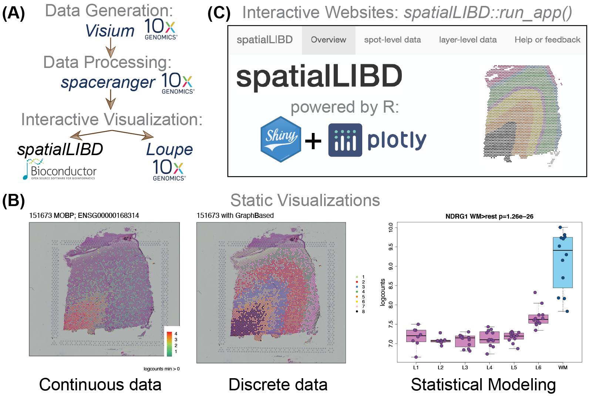
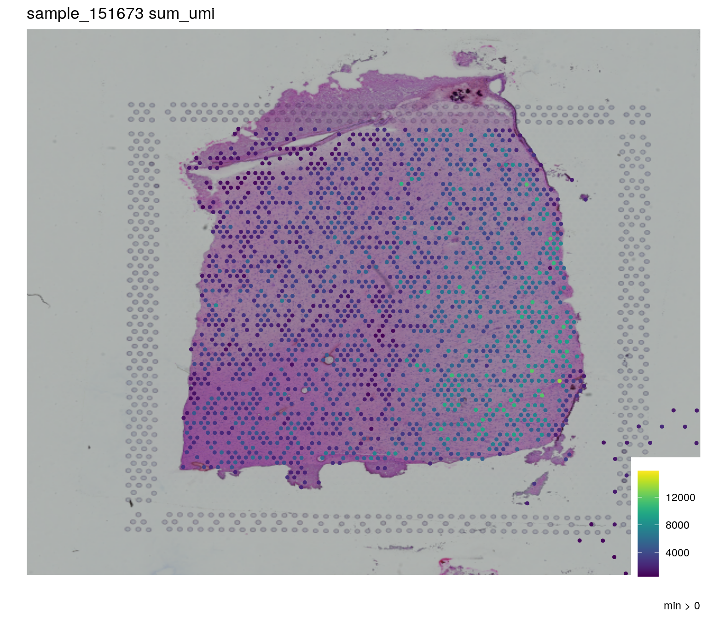
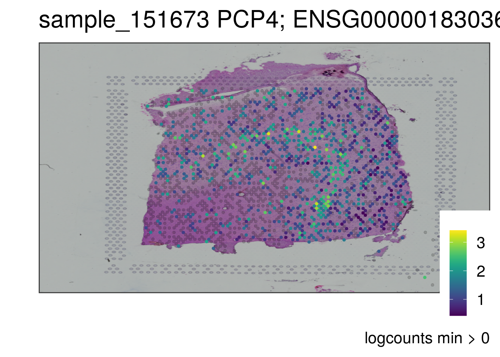

Chapter 19 spatialLIBD workflow
19.1 Overview
In the previous workflow, Human DLPFC workflow, you practiced some of the basics with a portion of the postmortem human brain dataset Kristen R. Maynard et al. (2021). The goal of this workflow is to learn what steps you need to carry out in order to create an interactive website to visualize this type of data. For this, we’ll use the spatialLIBD Bioconductor package Pardo et al. (2021).

Figure 2.1: spatialLIBD overview. Source: Pardo et al, bioRxiv, 2021.
19.2 spatialLIBD
19.2.1 Why use spatialLIBD?
Before we dive into the R code, let’s first revisit why you might want to use spatialLIBD. This package has a function, spatialLIBD::run_app(spe), which will create an interactive website using a SpatialExperiment object (spe). The interactive website it creates has several features that were initially designed for a specific dataset Kristen R. Maynard et al. (2021) and later made flexible for any dataset Pardo et al. (2021). These features include panels to visualize spots from the Visium platform by 10x Genomics:
- for one tissue section at a time, either with interactive or static versions
- multiple tissue sections at a time, either interactively or statically
Both options work with continuous and discrete variables such as the gene expression and clusters, respectively. The interactive version for discrete variables such as clusters is useful if you want to manually annotate Visium spots, as it was done in the initial project Kristen R. Maynard et al. (2021). spatialLIBD allows users to download the annotated spots and resume your spot annotation work later.

Figure 5.1: Screenshot of the ‘clusters (interactive)’ section of the ‘spot-level data’ panel created with the full spatialLIBD dataset. The website was created with spatialLIBD::run_app(spatialLIBD::fetch_data('spe')) version 1.4.0 and then using the lasso selection, we selected a set of spots in the UMAP interactive plot colored by the estimated number of cells per spot (cell_count) on the bottom left, which automatically updated the other three plots.
Visualizing genes or clusters across multiple tissue sections can be quite useful. For example, here we show the expression levels of PCP4 across two sets of spatially-adjacent replicates. PCP4 is a marker gene for layer 5 in the grey matter of the dorsolateral prefrontal cortex (DLPFC) in the human brain. Spatially-adjacent replicates are about 10 microns apart from each other and visualizations like the one below help assess the technical variability in the Visium technology.
![Screenshot of the 'gene grid (static)' section of the 'spot-level data' panel created with the full spatialLIBD dataset. The website was created with `spatialLIBD::run_app(spatialLIBD::fetch_data('spe'))` version 1.4.0, selecting the _PCP4_ gene, selecting the _paper_ gene color scale, changing the number of rows and columns in the grid 2, selecting two pairs of spatially-adjacent replicate samples (151507, 151508, 151673, and 151674), and clicking on the _upgrade grid plot_ button. Note that the default _viridis_ gene color scale is color-blind friendly.](images/spatialLIBD_gene_grid.png)
Figure 5.2: Screenshot of the ‘gene grid (static)’ section of the ‘spot-level data’ panel created with the full spatialLIBD dataset. The website was created with spatialLIBD::run_app(spatialLIBD::fetch_data('spe')) version 1.4.0, selecting the PCP4 gene, selecting the paper gene color scale, changing the number of rows and columns in the grid 2, selecting two pairs of spatially-adjacent replicate samples (151507, 151508, 151673, and 151674), and clicking on the upgrade grid plot button. Note that the default viridis gene color scale is color-blind friendly.
You can try out a spatialLIBD-powered website yourself by opening it on your browser.2
19.2.2 Want to learn more about spatialLIBD?
If you are interested in learning more about spatialLIBD, please check the spatialLIBD Bioconductor landing page or the pkgdown documentation website. In particular, we have two vignettes documents:
You can also read more about spatialLIBD in the associated publication.
citation("spatialLIBD")[1]##
## Pardo B, Spangler A, Weber LM, Hicks SC, Jaffe AE, Martinowich K,
## Maynard KR, Collado-Torres L (2021). "spatialLIBD: an R/Bioconductor
## package to visualize spatially-resolved transcriptomics data."
## _bioRxiv_. doi: 10.1101/2021.04.29.440149 (URL:
## https://doi.org/10.1101/2021.04.29.440149), <URL:
## https://www.biorxiv.org/content/10.1101/2021.04.29.440149v1>.
##
## A BibTeX entry for LaTeX users is
##
## @Article{,
## title = {spatialLIBD: an R/Bioconductor package to visualize spatially-resolved transcriptomics data},
## author = {Brenda Pardo and Abby Spangler and Lukas M. Weber and Stephanie C. Hicks and Andrew E. Jaffe and Keri Martinowich and Kristen R. Maynard and Leonardo Collado-Torres},
## year = {2021},
## journal = {bioRxiv},
## doi = {10.1101/2021.04.29.440149},
## url = {https://www.biorxiv.org/content/10.1101/2021.04.29.440149v1},
## }19.2.2.1 Recordings
If you prefer to watch recordings of presentations related to the dataset Kristen R. Maynard et al. (2021) or spatialLIBD Pardo et al. (2021), check the following:3
These slides were part of our 2021-04-27 webinar for BioTuring that you can watch from their website or YouTube:
A recording of an earlier version of this talk is also available on YouTube.
You might also be interested in this video demonstration of spatialLIBD for the LIBD rstats club.
19.3 Code prerequisites
Ok, let’s get started! First we need to re-create the spe object from the Human DLPFC workflow in the previous chapter. That chapter included code for visualizing results along the way, which we’ll skip here. Thus, we’ll use the following packages in addition to spatialLIBD:
SpatialExperiment: for storing our data in a common objectSTexampleData: for accessing the example datascater: for quality control checksscran: for normalization, dimension reduction, and clusteringigraph: for clustering algorithmsBiocFileCache: for downloading and storing datartracklayer: for importing gene annotation fileslobstr: for checking object memory usage
You’ll need to have the R version compatible with bioc-release4 installed in your computer, as documented by Bioconductor. Alternatively, you can use the Bioconductor docker images. Next, if you haven’t installed these packages, please do so with the following R code.
if (!requireNamespace("BiocManager", quietly = TRUE)) {
install.packages("BiocManager")
}
## Check that you have a valid installation
BiocManager::valid()
## Install the required R packages for this workflow
BiocManager::install(c(
"SpatialExperiment",
"STexampleData",
"scater",
"scran",
"igraph",
"BiocFileCache",
"rtracklayer",
"lobstr",
"spatialLIBD"
))We can now run the following R code to re-make the spe object from the Human DLPFC workflow. This will take a bit of time.
## Load packages required for the
## "Visium human DLPFC workflow"
library("SpatialExperiment")
library("STexampleData")
library("scater")
library("scran")
library("igraph")
library("BiocFileCache")
library("rtracklayer")
library("lobstr")
library("spatialLIBD")
## Start tracking time
time_start <- Sys.time()
# load object
spe <- Visium_humanDLPFC()
# subset to keep only spots over tissue
spe <- spe[, spatialData(spe)$in_tissue == 1]
# identify mitochondrial genes
is_mito <- grepl("(^MT-)|(^mt-)", rowData(spe)$gene_name)
# calculate per-spot QC metrics and store in colData
spe <- addPerCellQC(spe, subsets = list(mito = is_mito))
# select QC thresholds
qc_lib_size <- colData(spe)$sum < 500
qc_detected <- colData(spe)$detected < 250
qc_mito <- colData(spe)$subsets_mito_percent > 30
qc_cell_count <- colData(spe)$cell_count > 12
# combined set of discarded spots
discard <- qc_lib_size | qc_detected | qc_mito | qc_cell_count
# store in object
colData(spe)$discard <- discard
# filter low-quality spots
spe <- spe[, !colData(spe)$discard]
# quick clustering for pool-based size factors
set.seed(123)
qclus <- quickCluster(spe)
# calculate size factors and store in object
spe <- computeSumFactors(spe, cluster = qclus)
# calculate logcounts (log-transformed normalized counts) and store in object
spe <- logNormCounts(spe)
# remove mitochondrial genes
spe <- spe[!is_mito, ]
# fit mean-variance relationship
dec <- modelGeneVar(spe)
# select top HVGs
top_hvgs <- getTopHVGs(dec, prop = 0.1)
# compute PCA
set.seed(123)
spe <- runPCA(spe, subset_row = top_hvgs)
# compute UMAP on top 50 PCs
set.seed(123)
spe <- runUMAP(spe, dimred = "PCA")
# update column names for easier plotting
colnames(reducedDim(spe, "UMAP")) <- paste0("UMAP", 1:2)
# graph-based clustering
set.seed(123)
k <- 10
g <- buildSNNGraph(spe, k = k, use.dimred = "PCA")
g_walk <- igraph::cluster_walktrap(g)
clus <- g_walk$membership
# store cluster labels in column 'label' in colData
colLabels(spe) <- factor(clus)
# set gene names as row names for easier plotting
rownames(spe) <- rowData(spe)$gene_name
# test for marker genes
markers <- findMarkers(spe, test = "binom", direction = "up")
## Find the interesting markers for each cluster
interesting <- sapply(markers, function(x) x$Top <= 5)
colnames(interesting) <- paste0("gene_interest_", seq_len(length(markers)))
rowData(spe) <- cbind(rowData(spe), interesting)
## How long this code took to run
time_prereqs <- Sys.time()
time_prereqs - time_start## Time difference of 2.687211 mins19.4 Prepare for spatialLIBD
Now that we have a spe object with quality control information, dimension reduction results, clustering data, among other things, we can proceed to visualize the object using spatialLIBD. Well, almost. First we need to modify the spe object, similar to steps we need to carry out when using spatialLIBD with 10x Genomics public datasets
19.4.1 Basic information
## Add some information used by spatialLIBD
spe$key <- paste0(spe$sample_id, "_", colnames(spe))
spe$sum_umi <- colSums(counts(spe))
spe$sum_gene <- colSums(counts(spe) > 0)19.4.2 Gene annotation
Since the gene information is missing, we’ll add the gene annotation data from Gencode although you would ideally add this information from the same gene annotation you used for running spaceranger.
## Download the Gencode v32 GTF file and cache it
bfc <- BiocFileCache::BiocFileCache()
gtf_cache <- BiocFileCache::bfcrpath(
bfc,
paste0(
"ftp://ftp.ebi.ac.uk/pub/databases/gencode/Gencode_human/",
"release_32/gencode.v32.annotation.gtf.gz"
)
)## adding rname 'ftp://ftp.ebi.ac.uk/pub/databases/gencode/Gencode_human/release_32/gencode.v32.annotation.gtf.gz'## Show the GTF cache location
gtf_cache## BFC1
## "/github/home/.cache/R/BiocFileCache/696adf605c_gencode.v32.annotation.gtf.gz"## Import into R (takes ~1 min)
gtf <- rtracklayer::import(gtf_cache)
## Subset to genes only
gtf <- gtf[gtf$type == "gene"]
## Remove the .x part of the gene IDs
gtf$gene_id <- gsub("\\..*", "", gtf$gene_id)
## Set the names to be the gene IDs
names(gtf) <- gtf$gene_id
## Match the genes
match_genes <- match(rowData(spe)$gene_id, gtf$gene_id)
table(is.na(match_genes))##
## FALSE TRUE
## 33267 258## Drop the few genes for which we don't have information
spe <- spe[!is.na(match_genes), ]
match_genes <- match_genes[!is.na(match_genes)]
## Keep only some columns from the gtf
mcols(gtf) <- mcols(gtf)[, c("source", "type", "gene_id", "gene_name", "gene_type")]
## Save the "interest"ing columns from our original spe object
interesting <- rowData(spe)[, grepl("interest", colnames(rowData(spe)))]
## Add the gene info to our SPE object
rowRanges(spe) <- gtf[match_genes]
## Add back the "interest" coolumns
rowData(spe) <- cbind(rowData(spe), interesting)
## Inspect the gene annotation data we added
rowRanges(spe)## GRanges object with 33267 ranges and 11 metadata columns:
## seqnames ranges strand | source type
## <Rle> <IRanges> <Rle> | <factor> <factor>
## ENSG00000243485 chr1 29554-31109 + | HAVANA gene
## ENSG00000237613 chr1 34554-36081 - | HAVANA gene
## ENSG00000186092 chr1 65419-71585 + | HAVANA gene
## ENSG00000238009 chr1 89295-133723 - | HAVANA gene
## ENSG00000239945 chr1 89551-91105 - | HAVANA gene
## ... ... ... ... . ... ...
## ENSG00000160298 chr21 46300181-46323875 - | HAVANA gene
## ENSG00000160299 chr21 46324141-46445769 + | HAVANA gene
## ENSG00000160305 chr21 46458891-46570015 + | HAVANA gene
## ENSG00000160307 chr21 46598604-46605208 - | HAVANA gene
## ENSG00000160310 chr21 46635595-46665124 + | HAVANA gene
## gene_id gene_name gene_type gene_interest_1
## <character> <character> <character> <logical>
## ENSG00000243485 ENSG00000243485 MIR1302-2HG lncRNA TRUE
## ENSG00000237613 ENSG00000237613 FAM138A lncRNA TRUE
## ENSG00000186092 ENSG00000186092 OR4F5 protein_coding TRUE
## ENSG00000238009 ENSG00000238009 AL627309.1 lncRNA TRUE
## ENSG00000239945 ENSG00000239945 AL627309.3 lncRNA TRUE
## ... ... ... ... ...
## ENSG00000160298 ENSG00000160298 C21orf58 protein_coding FALSE
## ENSG00000160299 ENSG00000160299 PCNT protein_coding FALSE
## ENSG00000160305 ENSG00000160305 DIP2A protein_coding FALSE
## ENSG00000160307 ENSG00000160307 S100B protein_coding FALSE
## ENSG00000160310 ENSG00000160310 PRMT2 protein_coding FALSE
## gene_interest_2 gene_interest_3 gene_interest_4
## <logical> <logical> <logical>
## ENSG00000243485 TRUE TRUE TRUE
## ENSG00000237613 TRUE TRUE TRUE
## ENSG00000186092 TRUE TRUE TRUE
## ENSG00000238009 TRUE TRUE TRUE
## ENSG00000239945 TRUE TRUE TRUE
## ... ... ... ...
## ENSG00000160298 FALSE FALSE FALSE
## ENSG00000160299 FALSE FALSE FALSE
## ENSG00000160305 FALSE FALSE FALSE
## ENSG00000160307 FALSE FALSE FALSE
## ENSG00000160310 FALSE FALSE FALSE
## gene_interest_5 gene_interest_6
## <logical> <logical>
## ENSG00000243485 TRUE TRUE
## ENSG00000237613 TRUE TRUE
## ENSG00000186092 TRUE TRUE
## ENSG00000238009 TRUE TRUE
## ENSG00000239945 TRUE TRUE
## ... ... ...
## ENSG00000160298 FALSE FALSE
## ENSG00000160299 FALSE FALSE
## ENSG00000160305 FALSE FALSE
## ENSG00000160307 FALSE FALSE
## ENSG00000160310 FALSE FALSE
## -------
## seqinfo: 25 sequences from an unspecified genome; no seqlengthsNow that we have the gene annotation information, we can use it to add a few more pieces to our spe object that spatialLIBD will use. For example, we want to enable users to search genes by either their gene symbol or their Ensembl ID. We also like to visualize the amount and percent of the mitochondrial gene expression.
## Add information used by spatialLIBD
rowData(spe)$gene_search <- paste0(
rowData(spe)$gene_name, "; ", rowData(spe)$gene_id
)
## Compute chrM expression and chrM expression ratio
is_mito <- which(seqnames(spe) == "chrM")
spe$expr_chrM <- colSums(counts(spe)[is_mito, , drop = FALSE])
spe$expr_chrM_ratio <- spe$expr_chrM / spe$sum_umi19.4.3 Extra information and filtering
Now that we have the full gene annotation information we need, we can proceed to add some last touches as well as filter the object to reduce the memory required for visualizing the data.
## Add a variable for saving the manual annotations
spe$ManualAnnotation <- "NA"
## Remove genes with no data
no_expr <- which(rowSums(counts(spe)) == 0)
## Number of genes with no counts
length(no_expr)## [1] 11568## Compute the percent of genes with no counts
length(no_expr) / nrow(spe) * 100## [1] 34.7732spe <- spe[-no_expr, , drop = FALSE]
## Remove spots without counts
summary(spe$sum_umi)## Min. 1st Qu. Median Mean 3rd Qu. Max.
## 462 2397 3452 3855 4932 15862## If we had spots with no counts, we would remove them
if (any(spe$sum_umi == 0)) {
spots_no_counts <- which(spe$sum_umi == 0)
## Number of spots with no counts
print(length(spots_no_counts))
## Percent of spots with no counts
print(length(spots_no_counts) / ncol(spe) * 100)
spe <- spe[, -spots_no_counts, drop = FALSE]
}We think that we are ready to proceed to making our interactive website. Let’s use the spatialLIBD::check_spe() function, just to verify that we are right. If we aren’t, then it’ll try to tell us what we missed.
## Run check_spe() function
spatialLIBD::check_spe(spe)## class: SpatialExperiment
## dim: 21699 3582
## metadata(0):
## assays(2): counts logcounts
## rownames(21699): ENSG00000243485 ENSG00000238009 ... ENSG00000160307
## ENSG00000160310
## rowData names(12): source type ... gene_interest_6 gene_search
## colnames(3582): AAACAAGTATCTCCCA-1 AAACACCAATAACTGC-1 ...
## TTGTTTCCATACAACT-1 TTGTTTGTGTAAATTC-1
## colData names(18): cell_count ground_truth ... expr_chrM_ratio
## ManualAnnotation
## reducedDimNames(2): PCA UMAP
## mainExpName: NULL
## altExpNames(0):
## spatialData names(6) : barcode_id in_tissue ... pxl_col_in_fullres
## pxl_row_in_fullres
## spatialCoords names(2) : x y
## imgData names(4): sample_id image_id data scaleFactor## End tracking time
time_end <- Sys.time()
## How long this code took to run
time_end - time_prereqs## Time difference of 51.62637 secsCreating our final spe object took 3.5476508696874 to run. So you might want to save this object for later use.
saveRDS(spe, file = "spe_workflow_Visium_spatialLIBD.rds")You can then re-load it with the following code on a later session.
spe <- readRDS("spe_workflow_Visium_spatialLIBD.rds")19.5 Explore the data
In order to visualize the data, we can then use spatialLIBD::vis_gene(). Note that we didn’t need to do all that hard work just for that. But well, this is a nice quick check before we try launching our interactive website.
## Sum of UMI
spatialLIBD::vis_gene(
spe = spe,
sampleid = "sample_151673",
geneid = "sum_umi"
)
## PCP4, a layer 5 marker gene
spatialLIBD::vis_gene(
spe = spe,
sampleid = "sample_151673",
geneid = rowData(spe)$gene_search[which(rowData(spe)$gene_name == "PCP4")]
)
As we wanted let’s proceed to visualize the data interactively with a spatialLIBD-powered website. We have lots of variables to choose from. We’ll specify which are our continuous and discrete variables in our spatialLIBD::run_app() call.
## Explore all the variables we can use
colData(spe)## DataFrame with 3582 rows and 18 columns
## cell_count ground_truth sample_id sum detected
## <integer> <factor> <character> <numeric> <numeric>
## AAACAAGTATCTCCCA-1 6 Layer3 sample_151673 8458 3586
## AAACACCAATAACTGC-1 5 WM sample_151673 3769 1960
## AAACAGAGCGACTCCT-1 2 Layer3 sample_151673 5433 2424
## AAACAGCTTTCAGAAG-1 4 Layer5 sample_151673 4278 2264
## AAACAGGGTCTATATT-1 6 Layer6 sample_151673 4004 2178
## ... ... ... ... ... ...
## TTGTTGTGTGTCAAGA-1 3 Layer5 sample_151673 3966 1982
## TTGTTTCACATCCAGG-1 3 WM sample_151673 4324 2170
## TTGTTTCATTAGTCTA-1 4 WM sample_151673 2761 1560
## TTGTTTCCATACAACT-1 3 Layer6 sample_151673 2322 1343
## TTGTTTGTGTAAATTC-1 5 Layer2 sample_151673 6281 2927
## subsets_mito_sum subsets_mito_detected subsets_mito_percent
## <numeric> <numeric> <numeric>
## AAACAAGTATCTCCCA-1 1407 13 16.6351
## AAACACCAATAACTGC-1 430 13 11.4089
## AAACAGAGCGACTCCT-1 1316 13 24.2223
## AAACAGCTTTCAGAAG-1 651 12 15.2174
## AAACAGGGTCTATATT-1 621 13 15.5095
## ... ... ... ...
## TTGTTGTGTGTCAAGA-1 789 13 19.89410
## TTGTTTCACATCCAGG-1 370 12 8.55689
## TTGTTTCATTAGTCTA-1 314 12 11.37269
## TTGTTTCCATACAACT-1 476 13 20.49957
## TTGTTTGTGTAAATTC-1 991 13 15.77774
## total discard sizeFactor label
## <numeric> <logical> <numeric> <factor>
## AAACAAGTATCTCCCA-1 8458 FALSE 1.853714 6
## AAACACCAATAACTGC-1 3769 FALSE 0.781389 3
## AAACAGAGCGACTCCT-1 5433 FALSE 1.083018 6
## AAACAGCTTTCAGAAG-1 4278 FALSE 0.972922 4
## AAACAGGGTCTATATT-1 4004 FALSE 0.883412 1
## ... ... ... ... ...
## TTGTTGTGTGTCAAGA-1 3966 FALSE 0.863963 2
## TTGTTTCACATCCAGG-1 4324 FALSE 0.911999 3
## TTGTTTCATTAGTCTA-1 2761 FALSE 0.562561 3
## TTGTTTCCATACAACT-1 2322 FALSE 0.460454 1
## TTGTTTGTGTAAATTC-1 6281 FALSE 1.462698 6
## key sum_umi sum_gene expr_chrM
## <character> <numeric> <integer> <numeric>
## AAACAAGTATCTCCCA-1 sample_151673_AAACAA.. 7051 3573 0
## AAACACCAATAACTGC-1 sample_151673_AAACAC.. 3339 1947 0
## AAACAGAGCGACTCCT-1 sample_151673_AAACAG.. 4117 2411 0
## AAACAGCTTTCAGAAG-1 sample_151673_AAACAG.. 3627 2252 0
## AAACAGGGTCTATATT-1 sample_151673_AAACAG.. 3383 2165 0
## ... ... ... ... ...
## TTGTTGTGTGTCAAGA-1 sample_151673_TTGTTG.. 3177 1969 0
## TTGTTTCACATCCAGG-1 sample_151673_TTGTTT.. 3954 2158 0
## TTGTTTCATTAGTCTA-1 sample_151673_TTGTTT.. 2447 1548 0
## TTGTTTCCATACAACT-1 sample_151673_TTGTTT.. 1846 1330 0
## TTGTTTGTGTAAATTC-1 sample_151673_TTGTTT.. 5290 2914 0
## expr_chrM_ratio ManualAnnotation
## <numeric> <character>
## AAACAAGTATCTCCCA-1 0 NA
## AAACACCAATAACTGC-1 0 NA
## AAACAGAGCGACTCCT-1 0 NA
## AAACAGCTTTCAGAAG-1 0 NA
## AAACAGGGTCTATATT-1 0 NA
## ... ... ...
## TTGTTGTGTGTCAAGA-1 0 NA
## TTGTTTCACATCCAGG-1 0 NA
## TTGTTTCATTAGTCTA-1 0 NA
## TTGTTTCCATACAACT-1 0 NA
## TTGTTTGTGTAAATTC-1 0 NA## Run our shiny app
if (interactive()) {
spatialLIBD::run_app(
spe,
sce_layer = NULL,
modeling_results = NULL,
sig_genes = NULL,
title = "OSTA spatialLIBD workflow example",
spe_discrete_vars = c("ground_truth", "label", "ManualAnnotation"),
spe_continuous_vars = c(
"cell_count",
"sum_umi",
"sum_gene",
"expr_chrM",
"expr_chrM_ratio",
"sum",
"detected",
"subsets_mito_sum",
"subsets_mito_detected",
"subsets_mito_percent",
"total",
"sizeFactor"
),
default_cluster = "label"
)
}
Figure 5.3: Screenshot of the ‘clusters (interactive)’ section of the ‘spot-level data’ panel created with with the data from this workflow.
19.7 Wrapping up
Thank you for reading this far! In this workflow we showed you:
- why you might be interested in using
spatialLIBD, - we re-used the
speobject from the Human DLPFC workflow chapter, - we adapted the
speobject to make it compatible withspatialLIBD, - we created an interactive website in our laptops,
- we shared the website with others using shinyapps.io.
Overall, we hope that you found this information useful and we wish you the best luck with exploring and annotating your own Visium data!
R session information
Here’s the R session information for this workflow.
options(width = 120)
sessioninfo::session_info()## ─ Session info ───────────────────────────────────────────────────────────────────────────────────────────────────────
## setting value
## version R version 4.1.0 (2021-05-18)
## os Ubuntu 20.04.2 LTS
## system x86_64, linux-gnu
## ui X11
## language (EN)
## collate en_US.UTF-8
## ctype en_US.UTF-8
## tz UTC
## date 2021-09-02
##
## ─ Packages ───────────────────────────────────────────────────────────────────────────────────────────────────────────
## package * version date lib source
## AnnotationDbi 1.55.1 2021-06-07 [1] Bioconductor
## AnnotationHub * 3.1.5 2021-08-12 [1] Bioconductor
## assertthat 0.2.1 2019-03-21 [1] RSPM (R 4.1.0)
## attempt 0.3.1 2020-05-03 [1] RSPM (R 4.1.0)
## beachmat 2.9.1 2021-08-11 [1] Bioconductor
## beeswarm 0.4.0 2021-06-01 [1] RSPM (R 4.1.0)
## benchmarkme 1.0.7 2021-03-21 [1] RSPM (R 4.1.0)
## benchmarkmeData 1.0.4 2020-04-23 [1] RSPM (R 4.1.0)
## Biobase * 2.53.0 2021-05-19 [1] Bioconductor
## BiocFileCache * 2.1.1 2021-06-23 [1] Bioconductor
## BiocGenerics * 0.39.2 2021-08-18 [1] Bioconductor
## BiocIO 1.3.0 2021-05-19 [1] Bioconductor
## BiocManager 1.30.16 2021-06-15 [2] CRAN (R 4.1.0)
## BiocNeighbors 1.11.0 2021-05-19 [1] Bioconductor
## BiocParallel 1.27.4 2021-08-19 [1] Bioconductor
## BiocSingular 1.9.1 2021-06-08 [1] Bioconductor
## BiocVersion 3.14.0 2021-05-19 [2] Bioconductor
## Biostrings 2.61.2 2021-08-04 [1] Bioconductor
## bit 4.0.4 2020-08-04 [1] RSPM (R 4.1.0)
## bit64 4.0.5 2020-08-30 [1] RSPM (R 4.1.0)
## bitops 1.0-7 2021-04-24 [1] RSPM (R 4.1.0)
## blob 1.2.2 2021-07-23 [1] RSPM (R 4.1.0)
## bluster 1.3.2 2021-08-30 [1] Bioconductor
## bookdown 0.22 2021-04-22 [1] RSPM (R 4.1.0)
## bslib 0.2.5.1 2021-05-18 [1] RSPM (R 4.1.0)
## cachem 1.0.5 2021-05-15 [2] RSPM (R 4.1.0)
## cli 3.0.1 2021-07-17 [2] RSPM (R 4.1.0)
## cluster 2.1.2 2021-04-17 [3] CRAN (R 4.1.0)
## codetools 0.2-18 2020-11-04 [3] CRAN (R 4.1.0)
## colorspace 2.0-2 2021-06-24 [1] RSPM (R 4.1.0)
## config 0.3.1 2020-12-17 [1] RSPM (R 4.1.0)
## cowplot 1.1.1 2020-12-30 [1] RSPM (R 4.1.0)
## crayon 1.4.1 2021-02-08 [2] RSPM (R 4.1.0)
## curl 4.3.2 2021-06-23 [2] RSPM (R 4.1.0)
## data.table 1.14.0 2021-02-21 [1] RSPM (R 4.1.0)
## DBI 1.1.1 2021-01-15 [1] RSPM (R 4.1.0)
## dbplyr * 2.1.1 2021-04-06 [1] RSPM (R 4.1.0)
## DelayedArray 0.19.1 2021-06-25 [1] Bioconductor
## DelayedMatrixStats 1.15.4 2021-08-26 [1] Bioconductor
## desc 1.3.0 2021-03-05 [2] RSPM (R 4.1.0)
## digest 0.6.27 2020-10-24 [2] RSPM (R 4.1.0)
## dockerfiler 0.1.3 2019-03-19 [1] RSPM (R 4.1.0)
## doParallel 1.0.16 2020-10-16 [1] RSPM (R 4.1.0)
## dotCall64 1.0-1 2021-02-11 [1] RSPM (R 4.1.0)
## dplyr 1.0.7 2021-06-18 [2] RSPM (R 4.1.0)
## dqrng 0.3.0 2021-05-01 [1] RSPM (R 4.1.0)
## DropletUtils 1.13.2 2021-08-12 [1] Bioconductor
## DT 0.18 2021-04-14 [1] RSPM (R 4.1.0)
## edgeR 3.35.0 2021-05-19 [1] Bioconductor
## ellipsis 0.3.2 2021-04-29 [2] RSPM (R 4.1.0)
## evaluate 0.14 2019-05-28 [2] RSPM (R 4.1.0)
## ExperimentHub * 2.1.4 2021-07-27 [1] Bioconductor
## fansi 0.5.0 2021-05-25 [2] RSPM (R 4.1.0)
## farver 2.1.0 2021-02-28 [1] RSPM (R 4.1.0)
## fastmap 1.1.0 2021-01-25 [2] RSPM (R 4.1.0)
## fields 12.5 2021-06-25 [1] RSPM (R 4.1.0)
## filelock 1.0.2 2018-10-05 [1] RSPM (R 4.1.0)
## FNN 1.1.3 2019-02-15 [1] RSPM (R 4.1.0)
## foreach 1.5.1 2020-10-15 [1] RSPM (R 4.1.0)
## fs 1.5.0 2020-07-31 [2] RSPM (R 4.1.0)
## generics 0.1.0 2020-10-31 [2] RSPM (R 4.1.0)
## GenomeInfoDb * 1.29.5 2021-08-30 [1] Bioconductor
## GenomeInfoDbData 1.2.6 2021-07-30 [1] Bioconductor
## GenomicAlignments 1.29.0 2021-05-19 [1] Bioconductor
## GenomicRanges * 1.45.0 2021-05-19 [1] Bioconductor
## ggbeeswarm 0.6.0 2017-08-07 [1] RSPM (R 4.1.0)
## ggplot2 * 3.3.5 2021-06-25 [1] RSPM (R 4.1.0)
## ggrepel 0.9.1 2021-01-15 [1] RSPM (R 4.1.0)
## glue 1.4.2 2020-08-27 [2] RSPM (R 4.1.0)
## golem 0.3.1 2021-04-17 [1] RSPM (R 4.1.0)
## gridExtra 2.3 2017-09-09 [1] RSPM (R 4.1.0)
## gtable 0.3.0 2019-03-25 [1] RSPM (R 4.1.0)
## HDF5Array 1.21.0 2021-05-19 [1] Bioconductor
## highr 0.9 2021-04-16 [2] RSPM (R 4.1.0)
## htmltools 0.5.1.1 2021-01-22 [1] RSPM (R 4.1.0)
## htmlwidgets 1.5.3 2020-12-10 [1] RSPM (R 4.1.0)
## httpuv 1.6.1 2021-05-07 [1] RSPM (R 4.1.0)
## httr 1.4.2 2020-07-20 [2] RSPM (R 4.1.0)
## igraph * 1.2.6 2020-10-06 [1] RSPM (R 4.1.0)
## interactiveDisplayBase 1.31.2 2021-07-30 [1] Bioconductor
## IRanges * 2.27.2 2021-08-18 [1] Bioconductor
## irlba 2.3.3 2019-02-05 [1] RSPM (R 4.1.0)
## iterators 1.0.13 2020-10-15 [1] RSPM (R 4.1.0)
## jquerylib 0.1.4 2021-04-26 [1] RSPM (R 4.1.0)
## jsonlite 1.7.2 2020-12-09 [2] RSPM (R 4.1.0)
## KEGGREST 1.33.0 2021-05-19 [1] Bioconductor
## knitr 1.33 2021-04-24 [2] RSPM (R 4.1.0)
## labeling 0.4.2 2020-10-20 [1] RSPM (R 4.1.0)
## later 1.2.0 2021-04-23 [1] RSPM (R 4.1.0)
## lattice 0.20-44 2021-05-02 [3] CRAN (R 4.1.0)
## lazyeval 0.2.2 2019-03-15 [1] RSPM (R 4.1.0)
## lifecycle 1.0.0 2021-02-15 [2] RSPM (R 4.1.0)
## limma 3.49.4 2021-08-08 [1] Bioconductor
## lobstr * 1.1.1 2019-07-02 [1] RSPM (R 4.1.0)
## locfit 1.5-9.4 2020-03-25 [1] RSPM (R 4.1.0)
## magick 2.7.2 2021-05-02 [1] RSPM (R 4.1.0)
## magrittr 2.0.1 2020-11-17 [2] RSPM (R 4.1.0)
## maps 3.3.0 2018-04-03 [1] RSPM (R 4.1.0)
## Matrix 1.3-4 2021-06-01 [2] RSPM (R 4.1.0)
## MatrixGenerics * 1.5.3 2021-08-05 [1] Bioconductor
## matrixStats * 0.60.0 2021-07-26 [1] RSPM (R 4.1.0)
## memoise 2.0.0 2021-01-26 [2] RSPM (R 4.1.0)
## metapod 1.1.0 2021-05-19 [1] Bioconductor
## mime 0.11 2021-06-23 [2] RSPM (R 4.1.0)
## munsell 0.5.0 2018-06-12 [1] RSPM (R 4.1.0)
## pillar 1.6.2 2021-07-29 [2] RSPM (R 4.1.0)
## pkgconfig 2.0.3 2019-09-22 [2] RSPM (R 4.1.0)
## pkgload 1.2.1 2021-04-06 [2] RSPM (R 4.1.0)
## plotly 4.9.4.1 2021-06-18 [1] RSPM (R 4.1.0)
## png 0.1-7 2013-12-03 [1] RSPM (R 4.1.0)
## Polychrome 1.3.1 2021-07-16 [1] RSPM (R 4.1.0)
## promises 1.2.0.1 2021-02-11 [1] RSPM (R 4.1.0)
## purrr 0.3.4 2020-04-17 [2] RSPM (R 4.1.0)
## R.methodsS3 1.8.1 2020-08-26 [1] RSPM (R 4.1.0)
## R.oo 1.24.0 2020-08-26 [1] RSPM (R 4.1.0)
## R.utils 2.10.1 2020-08-26 [1] RSPM (R 4.1.0)
## R6 2.5.0 2020-10-28 [2] RSPM (R 4.1.0)
## rappdirs 0.3.3 2021-01-31 [2] RSPM (R 4.1.0)
## RColorBrewer 1.1-2 2014-12-07 [1] RSPM (R 4.1.0)
## Rcpp 1.0.7 2021-07-07 [2] RSPM (R 4.1.0)
## RCurl 1.98-1.3 2021-03-16 [1] RSPM (R 4.1.0)
## remotes 2.4.0 2021-06-02 [1] RSPM (R 4.1.0)
## restfulr 0.0.13 2017-08-06 [1] RSPM (R 4.1.0)
## rhdf5 2.37.0 2021-05-19 [1] Bioconductor
## rhdf5filters 1.5.0 2021-05-19 [1] Bioconductor
## Rhdf5lib 1.15.2 2021-07-01 [1] Bioconductor
## rjson 0.2.20 2018-06-08 [1] RSPM (R 4.1.0)
## rlang 0.4.11 2021-04-30 [2] RSPM (R 4.1.0)
## rmarkdown 2.10 2021-08-06 [1] RSPM (R 4.1.0)
## roxygen2 7.1.1 2020-06-27 [2] RSPM (R 4.1.0)
## rprojroot 2.0.2 2020-11-15 [2] RSPM (R 4.1.0)
## Rsamtools 2.9.1 2021-06-17 [1] Bioconductor
## RSpectra 0.16-0 2019-12-01 [1] RSPM (R 4.1.0)
## RSQLite 2.2.7 2021-04-22 [1] RSPM (R 4.1.0)
## rstudioapi 0.13 2020-11-12 [2] RSPM (R 4.1.0)
## rsvd 1.0.5 2021-04-16 [1] RSPM (R 4.1.0)
## rtracklayer * 1.53.1 2021-08-13 [1] Bioconductor
## S4Vectors * 0.31.3 2021-08-26 [1] Bioconductor
## sass 0.4.0 2021-05-12 [1] RSPM (R 4.1.0)
## ScaledMatrix 1.1.0 2021-05-19 [1] Bioconductor
## scales 1.1.1 2020-05-11 [1] RSPM (R 4.1.0)
## scater * 1.21.3 2021-08-01 [1] Bioconductor
## scatterplot3d 0.3-41 2018-03-14 [1] RSPM (R 4.1.0)
## scran * 1.21.3 2021-08-03 [1] Bioconductor
## scuttle * 1.3.1 2021-08-05 [1] Bioconductor
## sessioninfo 1.1.1 2018-11-05 [2] RSPM (R 4.1.0)
## shiny 1.6.0 2021-01-25 [1] RSPM (R 4.1.0)
## shinyWidgets 0.6.0 2021-03-15 [1] RSPM (R 4.1.0)
## SingleCellExperiment * 1.15.2 2021-08-22 [1] Bioconductor
## spam 2.7-0 2021-06-25 [1] RSPM (R 4.1.0)
## sparseMatrixStats 1.5.3 2021-08-27 [1] Bioconductor
## SpatialExperiment * 1.3.4 2021-08-24 [1] Bioconductor
## spatialLIBD * 1.5.3 2021-08-07 [1] Bioconductor
## statmod 1.4.36 2021-05-10 [1] RSPM (R 4.1.0)
## STexampleData * 1.1.13 2021-08-05 [1] Bioconductor
## stringi 1.7.3 2021-07-16 [2] RSPM (R 4.1.0)
## stringr 1.4.0 2019-02-10 [2] RSPM (R 4.1.0)
## SummarizedExperiment * 1.23.4 2021-08-25 [1] Bioconductor
## testthat 3.0.4 2021-07-01 [2] RSPM (R 4.1.0)
## tibble 3.1.3 2021-07-23 [2] RSPM (R 4.1.0)
## tidyr 1.1.3 2021-03-03 [2] RSPM (R 4.1.0)
## tidyselect 1.1.1 2021-04-30 [2] RSPM (R 4.1.0)
## usethis 2.0.1 2021-02-10 [2] RSPM (R 4.1.0)
## utf8 1.2.2 2021-07-24 [2] RSPM (R 4.1.0)
## uwot 0.1.10 2020-12-15 [1] RSPM (R 4.1.0)
## vctrs 0.3.8 2021-04-29 [2] RSPM (R 4.1.0)
## vipor 0.4.5 2017-03-22 [1] RSPM (R 4.1.0)
## viridis 0.6.1 2021-05-11 [1] RSPM (R 4.1.0)
## viridisLite 0.4.0 2021-04-13 [1] RSPM (R 4.1.0)
## withr 2.4.2 2021-04-18 [2] RSPM (R 4.1.0)
## xfun 0.25 2021-08-06 [2] RSPM (R 4.1.0)
## XML 3.99-0.6 2021-03-16 [1] RSPM (R 4.1.0)
## xml2 1.3.2 2020-04-23 [2] RSPM (R 4.1.0)
## xtable 1.8-4 2019-04-21 [1] RSPM (R 4.1.0)
## XVector 0.33.0 2021-05-19 [1] Bioconductor
## yaml 2.2.1 2020-02-01 [2] RSPM (R 4.1.0)
## zlibbioc 1.39.0 2021-05-19 [1] Bioconductor
##
## [1] /__w/_temp/Library
## [2] /usr/local/lib/R/site-library
## [3] /usr/local/lib/R/libraryReferences
Check https://github.com/LieberInstitute/spatialLIBD#shiny-website-mirrors in case you need to use a mirror.
shiny-powered websites work best on browsers such as Google Chrome and Mozilla Firefox, among others.↩︎Originally available at https://github.com/LieberInstitute/spatialLIBD/blob/master/inst/app/www/documentation_spe.md#slides-and-videos.↩︎
This book is under development, so right now you actually need to use
bioc-devel. Once this book is submitted to Bioconductor, then it’ll work withbioc-release. TODO: remove this comment when the book is available onbioc-release.↩︎